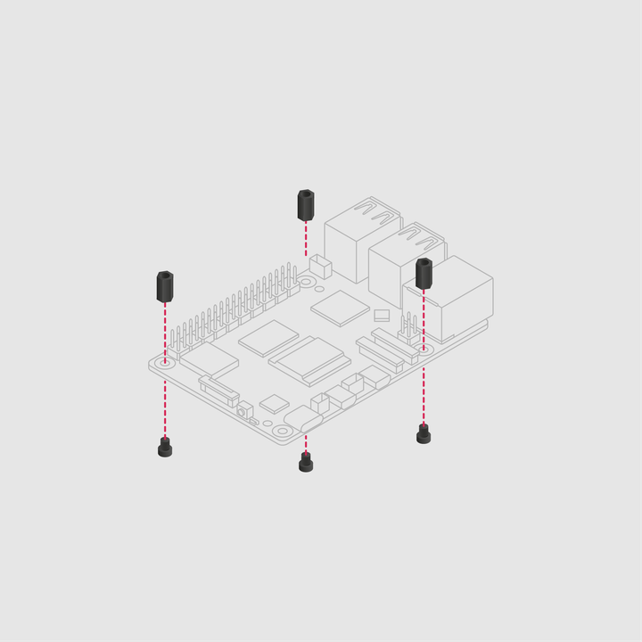
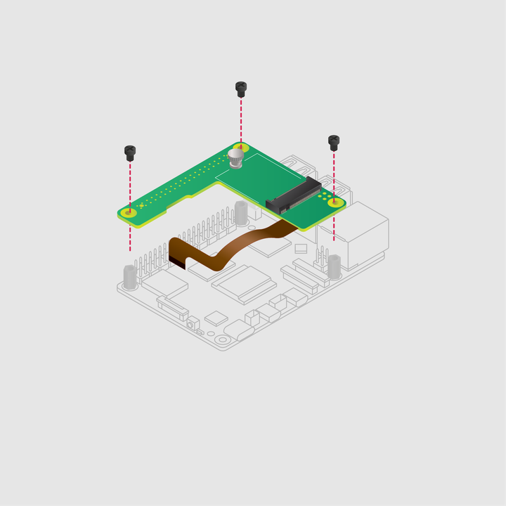
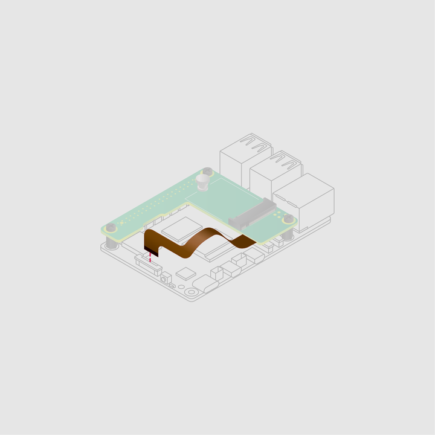
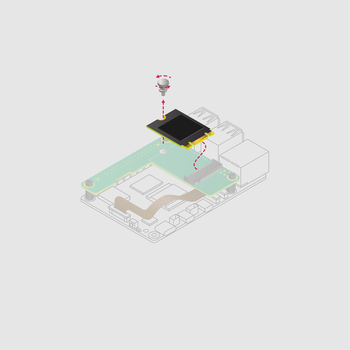
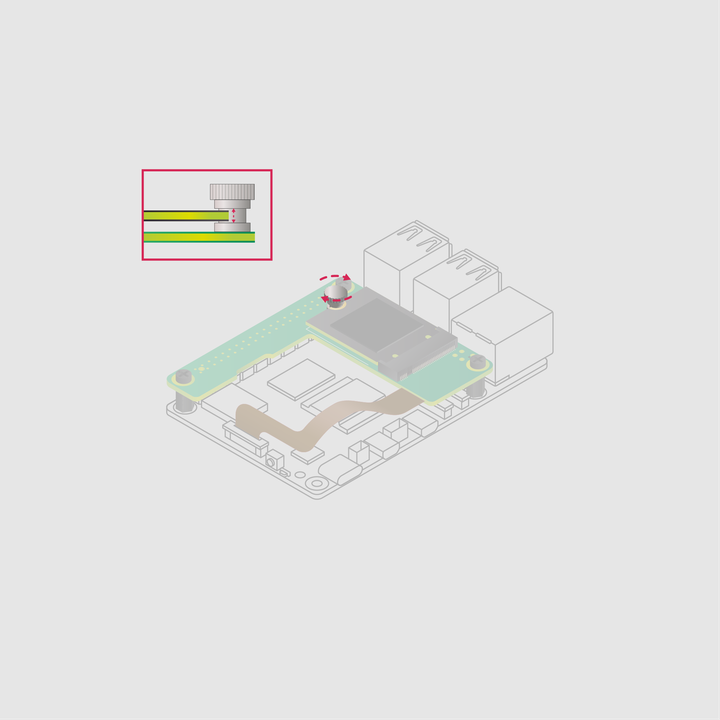
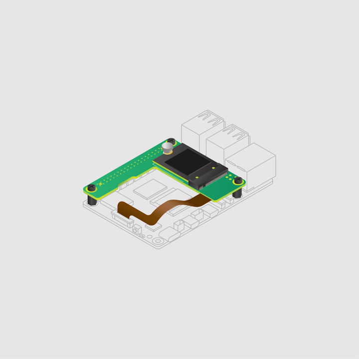

Follow these steps to install the M.2 HAT+ Compact. To install the M.2 HAT+ go to standard installation instead.
Install the spacers using the provided screws.

Set the M.2 HAT+ Compact on top of the spacers and use the remaining screws to secure it in place.

Insert the ribbon cable into the PCIe port of your
Lift the ribbon cable holder from both sides, then insert the cable with the copper contact points facing inward, towards the USB ports. With the ribbon cable fully and evenly inserted into the PCIe port, push the cable holder down from both sides to secure the ribbon cable firmly in place.

Remove the drive attachment screw by turning the screw counter-clockwise. Insert your M.2 SSD into the M.2 key edge connector, sliding the drive into the slot at a slight upward angle. Don't force the drive into the slot: it slides in gently.

Push the notch on the drive attachment screw into the slot at the end of your M.2 drive. Push the drive flat against the M.2 HAT+ Compact, and insert the SSD attachment screw by turning the screw clockwise until the SSD feels secure. Do not over-tighten the screw.

Congratulations, you have successfully installed the M.2 HAT+ Compact.

Figure 6. Installed M.2 HAT+ Compact